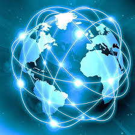

Je vais vous parler de ma passion pour la SNT

La SNT est un enseignement proposé en classe de Seconde. Il a pour but de faire découvrir aux élèves les principaux domaines liés au numérique, qui occupe aujourd'hui une place centrale dans nos vies. Cela permet de comprendre comment fonctionnent les technologies que nous utilisons au quotidien, mais aussi de réfléchir à leurs impacts sur notre société.
La programmation consiste à écrire des instructions compréhensibles par un ordinateur pour qu'il réalise des tâches spécifiques. Python est un langage simple à apprendre, utilisé par de nombreux professionnels dans le monde entier. Il permet de réaliser des programmes variés, allant de calaculs simples à des applications complexes. En SNT, apprendre Python aide à développer la logique, la rigueur et à comprendre comment fonctionnent les logiciels que nous utilisons. Cette programmation permet de réaliser des calculs automatisés, à créer des programmes simples qui posent des questions et analysent les réponses tout cela en apprenant les bases comme les variables et les conditions.
Chaque jours nous utilisons des données : messages envoyés, recherches sur Internet photos partagées,etc. Ces données doivent être organisées pour pouvoir être utilisées efficacement. Les données sont regroupées dans des tableaux, des bases de données ou des fichiers. Elles doivent être classées de manière claire pour pouvoir être retrouvées et analysées rapidement. En SNT nous apprenons donc à créer des tableaux de données, comprendre les bases de l'organisation d'une base de données mais aussi à trier et filtrer les informations.
Les réseaux sociaux comme Instagram, TikTok ou Snapchat permettent de partager des contenus et de communiquer. Mais il collecte aussi énormément de données personnelles. Ils influencent nos comportements, peuvent nous enfermer dans des "bulles" d'opinions et poser des questions sur la protection de la vie privée. La SNT permet d'étudier des algorithmes de recommandations et de réfléchir aux dangers du partage excessif d'informations personnelles.
L'informatique embarqueée désigne les systèmes informatiques intégres à des objets du quotidien : montre connéctée, voiture, réfigératuer intelligent,etc. Ces objets peuvent capter des informations, communiquer entre eux et parfois prendre des décisions de manière autonomes. Les sciences numériques nous permettent donc de découvrir comment fonctionnent les capteurs et de comprendre les enjeux de sécurité liés aux objets connéctés.
Lorsqu'on prend en photo, la lumière est captée par un capteur qui transforme l'image en données numériques. Ces données peuvent être modifiées par des logiciels pour améliorer ou transformer l'image : correction des couleurs, filtres, retouches, etc. En cours, nous apprenons à comprendre la structure d'une image numérique (pixeles,résolution) et à expérimenter des retouches simples.
Aujourd'hiio, nos téléphones peuvent nous localiser grâce à des signaux GPS, aux antennes relais et aux connexion Wi-Fi. La géolocalisation facilite nos déplacements, mais elle soulève des questions sur le respect de notre vie privée. Nous étudions le fonctionnent d'un GPS et réfléchissons aussi à l'impact de la géolocalisation sur nos libertés.
La cartographie a évolué : aujourd'hui, les cartes numériques sont interactives, mises à jour en temps réel et accessible à tous. Les cartes numériques sont utilisées pour se déplacer, pour analyser des données (comme la météo) ou même pour visualiser des réseaux sociaux. Nous pouvons donc apprendre à créer une carte simple et à comprendre comment sont générées les cartes Google Maps, par exemple.
Quelle est la différence entre Internet et le Web ? Tout d'abord Internet est un réseau mondial qui relie des ordinateurs entre eux alors que le Web est un service qui utilise Internet pour accéder à des pages et des sites. Quand nous utilisons Internet, nous envoyons et recevons des informations grâce à des adresses IP et des protocoles comme HTTP. En SNT nous pouvons comprendre le chemin parcouru par un message sur Internet ou encore étudier la structure d'un site Web simple.